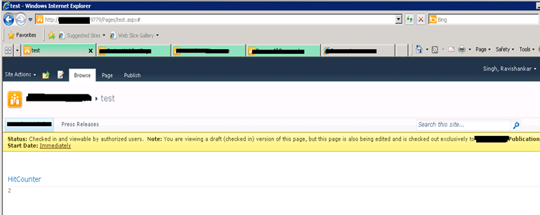
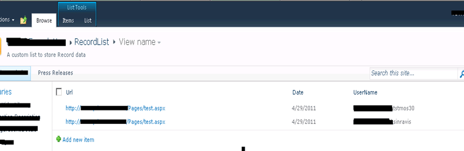
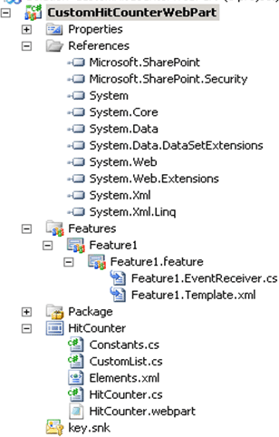

In this article I am going to demonstrate how to create Hit counter for SharePoint site with user details using sandbox solution.
This solution will be very useful when you need detail about the person who visit this page and also about the number of time page view with page detail. I created this solution that will make your work easy. It's very simple where you don't need to do anything
except deploying the feature and adding the web part into you master page or layout page in sharepoint2010.
Below is the screenshot that will display the how it looks like:

You can further add the name of the users who visit and pages viewed to this web part.
After activating this feature, it will create a list with fields and web part. List will look like below:

The folder hierarchy for this solution will look like:

Source code you can download with article.
Benefit of this article
You will learn following things:
Hope you enjoy the code and article. Enjoy coding.